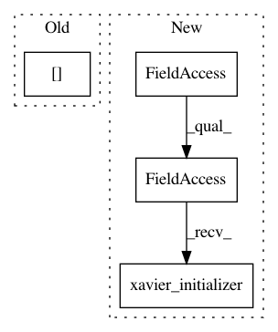

640bb9fd4fce9f7302edfddf845acca16188f602,net/ops/baseop.py,BaseOp,wrap_variable,#BaseOp#Any#,51
Before Change
self.lay.w[var] = tf.get_variable(var,
shape = self.lay.wshape[var],
dtype = tf.float32,
initializer = self.lay.w[var])
def wrap_pholder(self, ph, feed):
wrap layer.h into placeholders
After Change
self.lay.w[var] = tf.get_variable(var,
shape = self.lay.wshape[var],
dtype = tf.float32,
initializer = tf.contrib.layers.xavier_initializer())
def wrap_pholder(self, ph, feed):
wrap layer.h into placeholders
In pattern: SUPERPATTERN
Frequency: 3
Non-data size: 4
Instances
Project Name: thtrieu/darkflow
Commit Name: 640bb9fd4fce9f7302edfddf845acca16188f602
Time: 2017-04-09
Author: thtrieu@apcs.vn
File Name: net/ops/baseop.py
Class Name: BaseOp
Method Name: wrap_variable
Project Name: asyml/texar
Commit Name: 42efaa53edce9b84a98fef1fce24502e6d2ba941
Time: 2017-12-08
Author: shore@pku.edu.cn
File Name: texar/modules/encoders/transformer_encoders.py
Class Name: TransformerEncoder
Method Name: __init__
Project Name: analysiscenter/batchflow
Commit Name: f02b56207713275c749ff7c0d337c49bd3dffe53
Time: 2017-10-24
Author: rhudor@gmail.com
File Name: examples/simple_but_ugly/tf_models.py
Class Name: MyModel
Method Name: _build